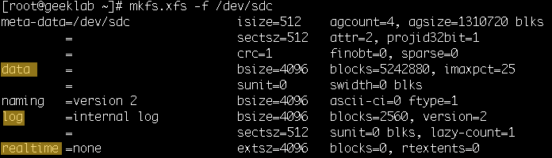

The XFS filesystem is a high performance journalling filesystem. XFS is the default file system for RedHat Linux 7. XFS supports a maximum file system size of 500 TB and a maximum file size of 16 TB. You can create an XFS file system on a regular disk partition and on a logical volume.
The data section of an XFS file system contains the file system metadata (inodes, directories, and indirect blocks) and the user file data. The data section is partitioned into allocation groups, which are virtual storage regions of fixed size. Any files and directories that you create can span multiple allocation groups. Each allocation group manages its own set of inodes and free space independently of other allocation groups to provide both scalability and parallelism of I/O operations.
The XFS journal (or log) can be located internally in the data section of the file system, or externally on a separate device to reduce the number of disk seeks. The journal stores changes to the file system metadata while the file system is running until those changes are written to the data section. XFS journaling guarantees the consistency of the file system following loss of power or a system crash. When mounting a file system after a crash, the journal is read to complete operations that were in progress at the time of the crash.
Use the mkfs.xfs or mkfs –t xfs command to create an XFS file system. The following example creates an XFS file system with an internal log on the /dev/sdc disk. As shown in the slide, parameters for the file system are displayed as output.
# mkfs.xfs /dev/sdc
meta-data=/dev/sdc isize=512 agcount=4, agsize=1310720 blks
= sectsz=512 attr=2, projid32bit=1
= crc=1 finobt=0, sparse=0
data = bsize=4096 blocks=5242880, imaxpct=25
= sunit=0 swidth=0 blks
naming =version 2 bsize=4096 ascii-ci=0 ftype=1
log =internal log bsize=4096 blocks=2560, version=2
= sectsz=512 sunit=0 blks, lazy-count=1
realtime =none extsz=4096 blocks=0, rtextents=0
The next example creates an XFS file system on /dev/sdb but places the journal on another device, /dev/sdc. The size option specifies a 10000 block journal:
# mkfs.xfs -l logdev=/dev/sdc,size=10000b /dev/sdb
meta-data=/dev/sdb isize=512 agcount=4, agsize=1310720 blks
= sectsz=512 attr=2, projid32bit=1
= crc=1 finobt=0, sparse=0
data = bsize=4096 blocks=5242880, imaxpct=25
= sunit=0 swidth=0 blks
naming =version 2 bsize=4096 ascii-ci=0 ftype=1
log =/dev/sdc bsize=4096 blocks=10000, version=2
= sectsz=512 sunit=0 blks, lazy-count=1
realtime =none extsz=4096 blocks=0, rtextents=0
The next example creates an XFS file system with a stripe-unit size of 32 KB and 6 units per stripe on a logical volume:
# mkfs.xfs -d su=32k,sw=6 /dev/mapper/vg_test-test_lv
meta-data=/dev/mapper/vg_test-test_lv isize=512 agcount=8, agsize=9592 blks
= sectsz=512 attr=2, projid32bit=1
= crc=1 finobt=0, sparse=0
data = bsize=4096 blocks=76736, imaxpct=25
= sunit=8 swidth=48 blks
naming =version 2 bsize=4096 ascii-ci=0 ftype=1
log =internal log bsize=4096 blocks=624, version=2
= sectsz=512 sunit=8 blks, lazy-count=1
realtime =none extsz=4096 blocks=0, rtextents=0
XFS uses the stripe-unit size and the number of units per stripe information to align data, inodes, and the journal appropriately for the storage. On LVM and Multiple Devices (MD) volumes and some hardware RAID configurations, XFS can automatically select the optimal stripe parameters.
The next example includes the output of the mkfs.xfs command. The -f option forces the overwrite of an existing file system type. The –L option sets the file system label to “XFS“. The -b size=1024 option sets the logical block size to 1024 bytes.
# mkfs.xfs -f -L XFS -b size=1024 /dev/sdb
meta-data=/dev/sdb isize=512 agcount=4, agsize=5242880 blks
= sectsz=512 attr=2, projid32bit=1
= crc=1 finobt=0, sparse=0
data = bsize=1024 blocks=20971520, imaxpct=25
= sunit=0 swidth=0 blks
naming =version 2 bsize=4096 ascii-ci=0 ftype=1
log =internal log bsize=1024 blocks=10240, version=2
= sectsz=512 sunit=0 blks, lazy-count=1
realtime =none extsz=4096 blocks=0, rtextents=0
The output shows that an XFS file system has up to three parts:
When using the default mkfs.xfs options, the realtime section is absent, and the log area is contained within the data section. The naming area specifies the settings for the file system directory.

The following are some additional options to the mkfs.xfs command: